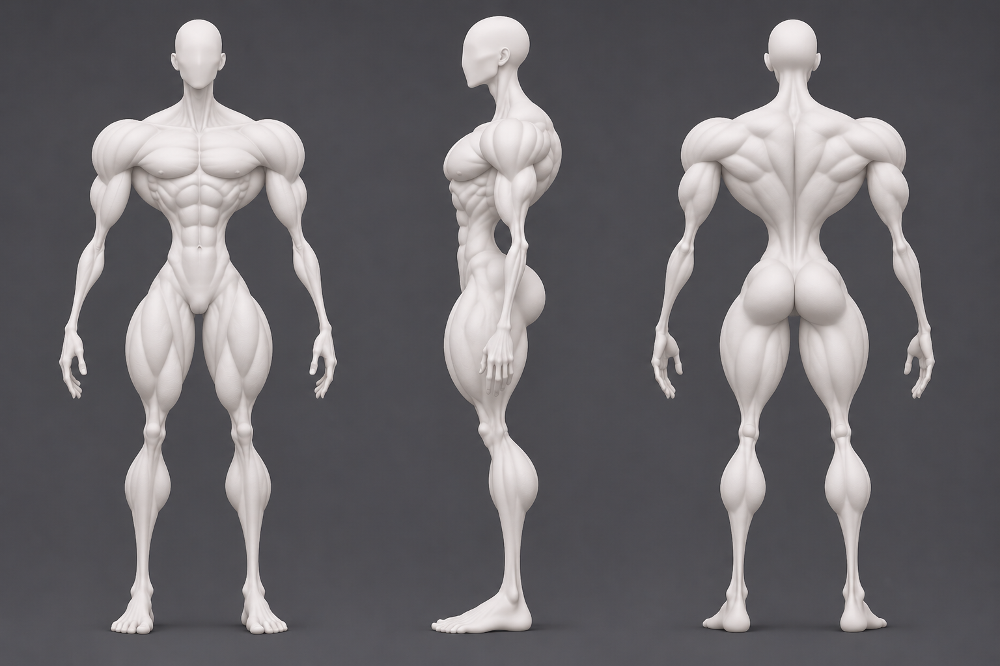
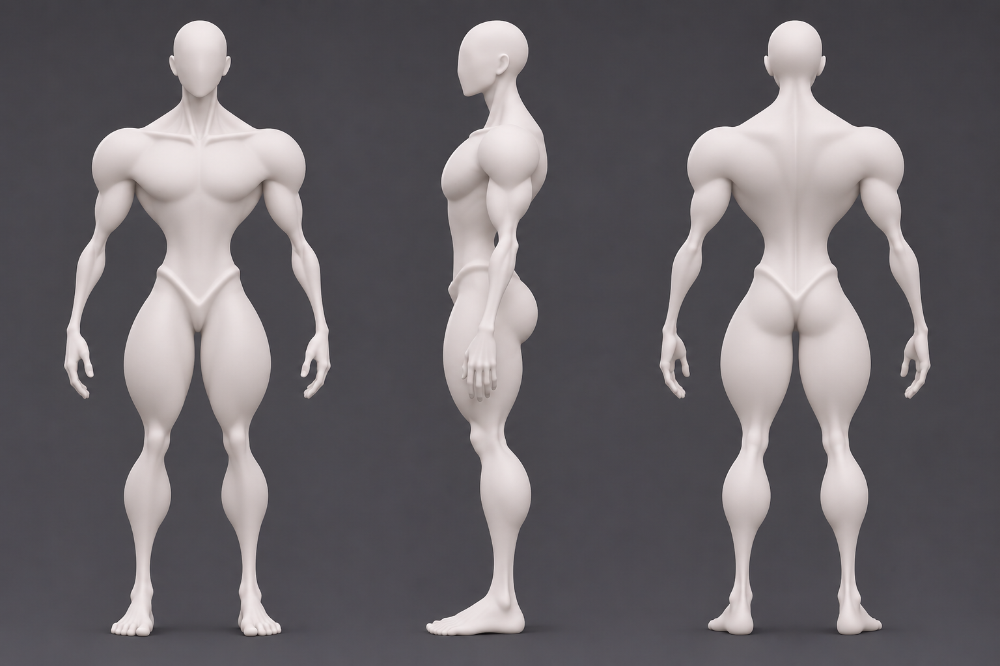
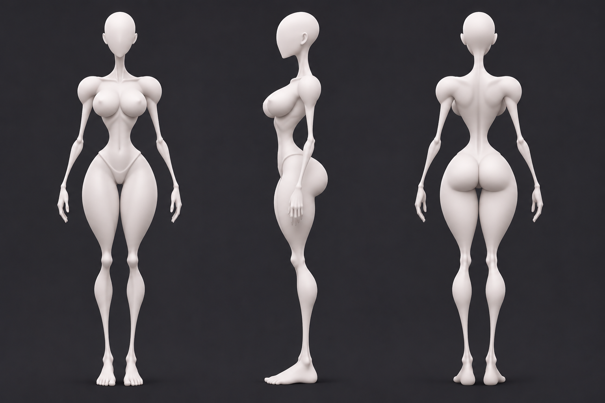
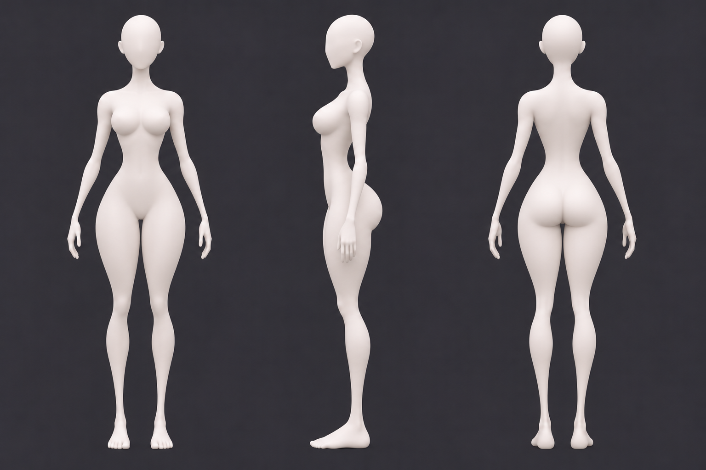
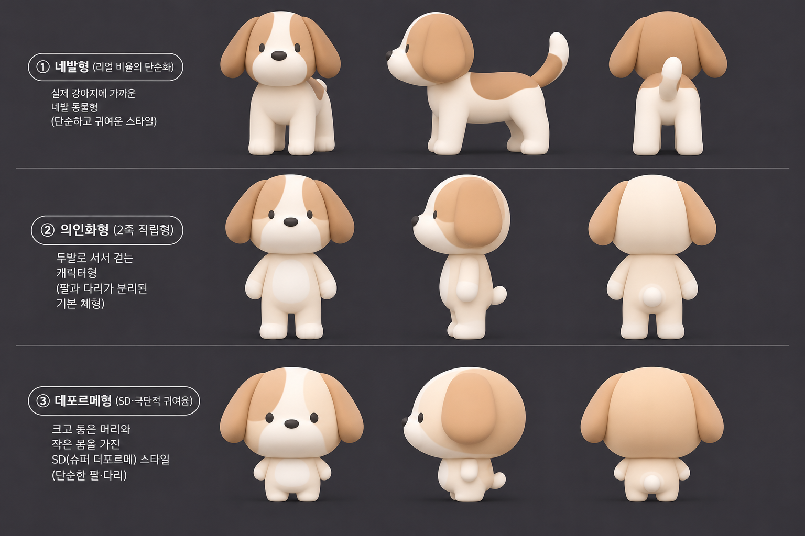
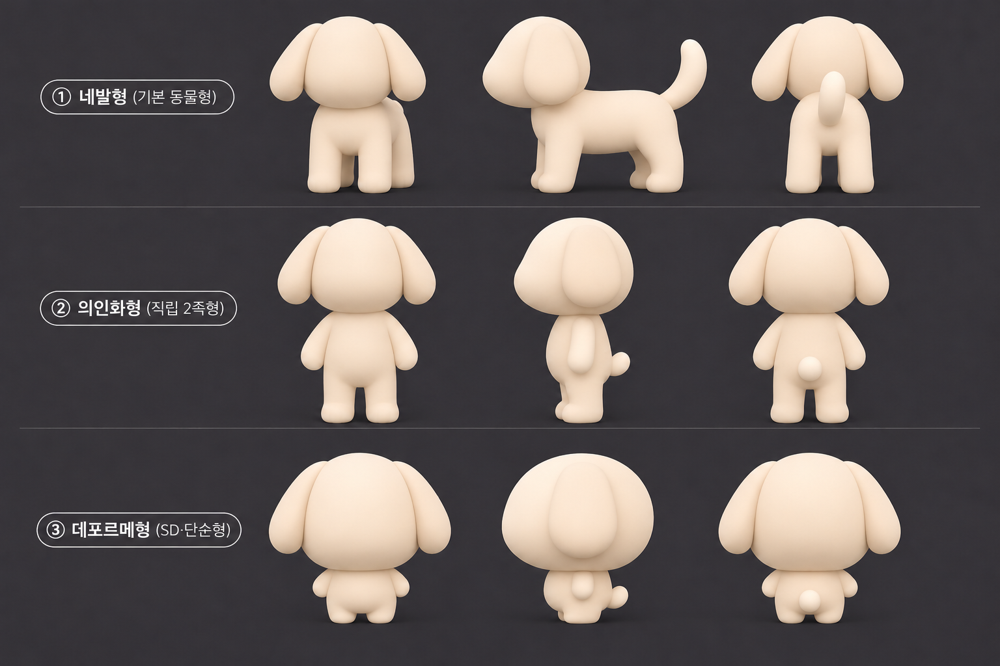
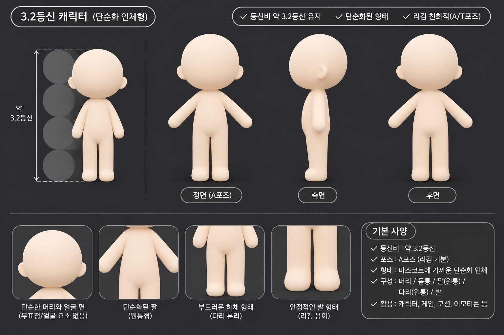
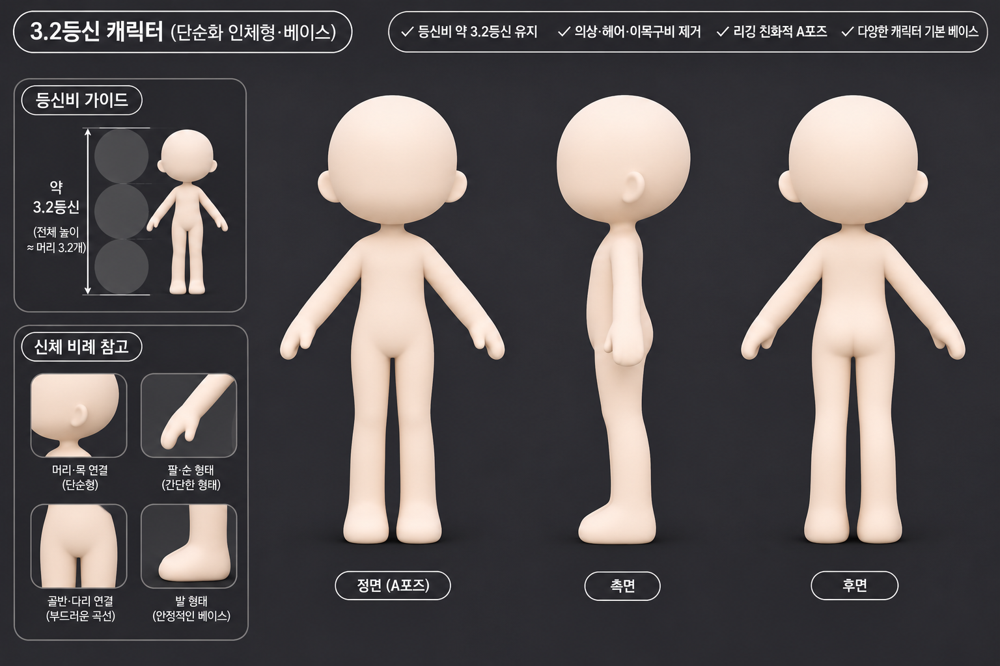
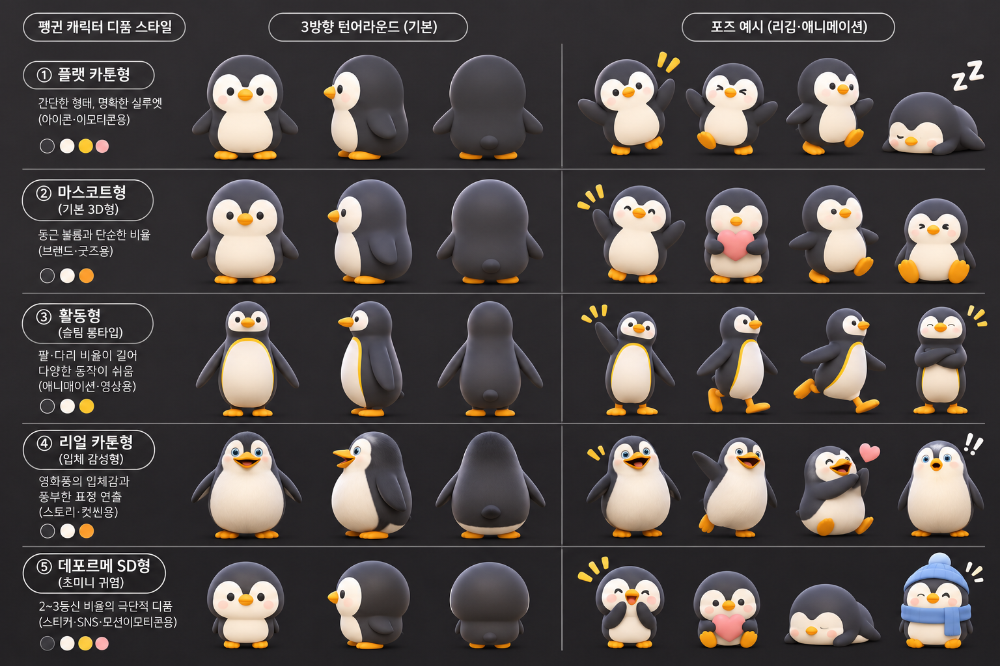
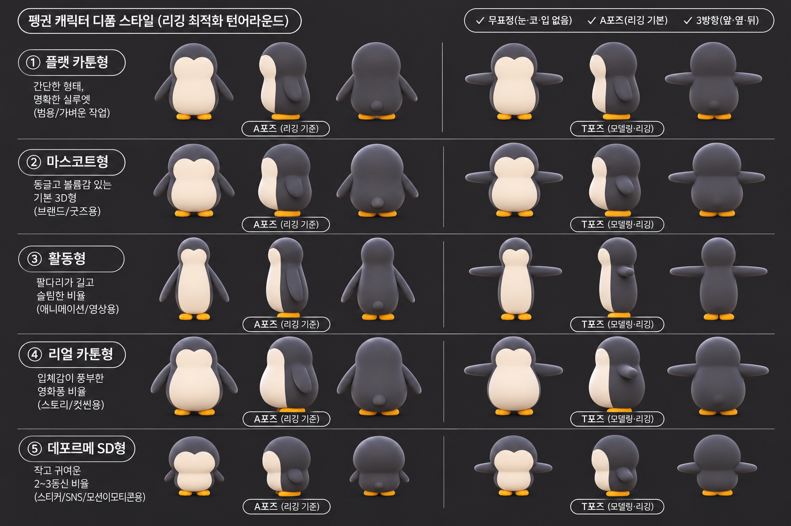

PROCESS / EVIDENCE / EVOLUTION
이미지로 보는 시행착오
요청한 것, 화면에 실제로 나타난 것, 아직 확정할 수 없는 것을 나란히 남깁니다.
공개 허용된 프로젝트 자료 중 비식별 생성 이미지를 선별했습니다. 제외된 자료는 설명과 보류 표시로 남겼습니다. 직접 첨부 연결은 미확인이며 동일 작업의 수정 전후라고 단정하지 않습니다.
공개 이미지 전체 보기 →근육 묘사의 세부 과잉 → 큰 덩어리로 단순화
08:49 이미지의 세부 근육 표현 뒤 08:50:58에 사용자가 세부 근육과 복근을 생략하라고 요청했다. 08:51 이미지에는 세부 분할이 줄어든 매끈한 덩어리가 보인다.
해석의 한계
파일 기록 시각과 시각 변화가 요청에 부합한다. 원 대화의 첨부 연결은 복구되지 않았으며 같은 3D 모델을 수정한 결과라는 뜻도 아니다.


과장된 근육 마네킹 턴어라운드.png
극단적으로 작은 관절과 큰 근육 덩어리. 복근·근섬유·골격 경계가 세세히 강조된 남성 마네킹 3면도.
파일 기록: 2026-11-04 08:49:06 UTC
1536 × 1024 px · 원본 열기


매끈한 근육형 마네킹 3면도.png
075에 비해 복근 분할과 근육 세부선을 줄이고 허벅지·종아리 등을 큰 매끈한 덩어리로 표현한 남성 마네킹 3면도.
파일 기록: 2026-11-04 08:51:41 UTC
1536 × 1024 px · 원본 열기
뼈와 관절 돌출 과잉 → 매끄러운 표면
관절을 가늘게 해달라는 요청 뒤 뼈 표현이 강한 이미지가 생겼고, 사용자는 다시 근육·뼈가 드러나지 않게 단순화해 달라고 했다. 후속 이미지의 표면은 더 매끈하다.
해석의 한계
이미지와 메시지의 시각·시간상 연관이다. 직접 첨부 링크와 실제 모델 구조는 미확인.


매끈한 여성 마네킹 전후좌우 턴어라운드.png
가는 관절과 강하게 강조된 쇄골·골반·무릎 등의 여성 마네킹 3방향. 파일명에는 전후좌우라고 쓰였지만 실제 큰 도상은 세 방향이다.
파일 기록: 2026-11-04 08:54:44 UTC
1536 × 1024 px · 원본 열기


미니멀 여성 마네킹 3면도.png
079보다 근육·뼈의 돌출 표현을 줄인 매끄러운 여성 마네킹 3면도. 얇은 허리·관절과 체형 차이는 유지된다.
파일 기록: 2026-11-04 08:57:02 UTC
1536 × 1024 px · 원본 열기
강아지 외형에서 눈·코·무늬 제거
09:09 강아지는 얼굴·무늬가 있고 09:10:21 제거 요청 뒤 09:10:53 단색/무표정 자료가 생성됐다.
해석의 한계
미확인 라이선스가 있는 원 참고 이미지의 권리를 해결해 주는 과정은 아니다. 직접 첨부 연결은 미확인.


강아지 3D 스타일 비교표.png
눈·코·흰 무늬·갈색 귀가 남은 강아지 3유형 3방향. 의인화·데포르메형 팔은 몸에 가깝다.
파일 기록: 2026-11-04 09:09:42 UTC
1536 × 1024 px · 원본 열기


강아지 캐릭터 3D 유형 비교표.png
눈·코·무늬를 지운 단색 강아지 3유형. 팔과 귀가 여전히 몸·머리 가까이 놓인다.
파일 기록: 2026-11-04 09:10:53 UTC
1536 × 1024 px · 원본 열기
팔·귀 유착 우려 → 벌린 리깅용 포즈
사용자가 Tripo에서 귀·팔이 머리·몸통에 붙을 가능성을 지적했다. 별도 리깅 도표에서는 팔을 T자로 벌리고 귀를 옆으로 벌린 시각적 개선이 보인다.
해석의 한계
두 파일 사이에 여러 요청이 존재하므로 단일 요청의 정확한 전후 결과라고 단정하지 않는다. 실제 Tripo 메시·스키닝 테스트는 확인하지 못했다.
강아지 캐릭터 3D 유형 비교표.png
눈·코·무늬를 지운 단색 강아지 3유형. 팔과 귀가 여전히 몸·머리 가까이 놓인다.
파일 기록: 2026-11-04 09:10:53 UTC
1536 × 1024 px · 원본 열기
이미지 공개 보류 · 자료가 사라진 것이 아닙니다.
원본은 비공개 검토본에 보존되어 있습니다.
3D 강아지 리깅 베이스 모델 비교.png
눈·코·무늬 없는 강아지 3유형. 의인화·데포르메형의 팔이 T자로 펼쳐지고 귀가 옆으로 벌어져 있다. 2D 도해만으로 실제 3D 리깅·관절 분리가 성공했음을 증명하지 않는다.
파일 기록: 2026-11-04 09:20:16 UTC
1536 × 1024 px · 공개 제외 · 원본은 비공개 보존
짧아진 등신비와 몸 길이 재수정
사용자가 몸이 지나치게 짧아졌다며 길게 요청하고, 다시 더 길게/머리는 작게 요청했다. 09:36과 09:37 자료 사이에 머리 대비 몸이 길어진 변화가 보인다.
해석의 한계
007은 첫 불만 이전 원본이 아니라 첫 수정 요청 이후 생성 자료다. 정확한 3.2등신 충족 여부는 측정 검증하지 않았다.


3.2등신 리깅 친화형 캐릭터 가이드.png
큰 둥근 머리와 짧고 단순한 몸통의 무채색 캐릭터 3방향. 앞·뒤 팔을 몸통에서 비스듬히 벌린다. 표기된 3.2등신은 도해의 주장으로, 실제 비율을 측정해 검증하지 않았다.
파일 기록: 2026-11-04 09:36:11 UTC
1536 × 1024 px · 원본 열기

3.2등신 캐릭터 턴어라운드 가이드.png
007보다 머리 대비 몸통과 팔다리가 길고 가는 단순 캐릭터 3방향. 이미지에 3.2등신 표기가 있으나 정확한 비율은 측정하지 않았다.
파일 기록: 2026-11-04 09:37:12 UTC
1536 × 1024 px · 원본 열기
의상·신발 미제거와 형태만 남기는 재요청
09:38:13 자료에는 상의·반바지·손목 밴드·레그워머·신발가 남아 있고, 사용자는 09:38:28에 의상과 신발이 사라지지 않았다고 지적한다. 09:39 이후 자료에서는 의상이 없는 단순 체형을 볼 수 있다.
해석의 한계
이후 서로 다른 참고 캐릭터 요청도 있어 008·098을 099의 확정 수정본이라 부르지 않는다. 실패 이미지와 불만은 강하게 부합하며 후속 무의상 이미지는 비교 자료다.
이미지 공개 보류 · 자료가 사라진 것이 아닙니다.
원본은 비공개 검토본에 보존되어 있습니다.
스타일 참고 캐릭터 3D 턴어라운드.png
얼굴·헤어는 비었으나 상의·반바지·손목 밴드·레그워머·신발 등 의상·액세서리가 남은 캐릭터 3방향. 의상/신발 제거 요청이 완전히 반영되지 않은 것을 픽셀로 볼 수 있다.
파일 기록: 2026-11-04 09:38:13 UTC
1536 × 1024 px · 공개 제외 · 원본은 비공개 보존


3.2등신 캐릭터 베이스 턴어라운드.png
의상·신발 없이 단순화한 둥근 머리 캐릭터 3방향. 파일 생성 시각은 의상 제거 재요청 직후이나 직접 응답 파일인지 확인되지 않았다.
파일 기록: 2026-11-04 09:39:04 UTC
1536 × 1024 px · 원본 열기
이미지 공개 보류 · 자료가 사라진 것이 아닙니다.
원본은 비공개 검토본에 보존되어 있습니다.
스타일 참고 캐릭터 3D 턴어라운드(1).png
머리·몸체 형태만 남기고 의상·부츠가 보이지 않는 A포즈 캐릭터 3방향. 099와 시각적 비교 가능하지만 직접 수정 응답 파일이라는 연결은 확보하지 못했다.
파일 기록: 2026-11-04 09:39:58 UTC
1536 × 1024 px · 공개 제외 · 원본은 비공개 보존
펭귄 얼굴/포즈 수정과 남은 색·무늬
사용자가 눈·코·입·무늬를 빼고 리깅 포즈로 통일해 달라고 했다. 후속 자료에서 얼굴과 A/T 포즈는 바뀌었지만 검정/크림색 무늬와 노란 발이 남는다.
해석의 한계
요청을 모두 완료한 성공 사례가 아니라 일부 수정과 잔여 문제를 함께 보여주는 자료다. 직접 첨부 연결은 미확인.


펭귄 캐릭터 스타일 턴어라운드 가이드.png
펭귄 여러 체형과 표정·동작. 얼굴·눈·부리와 검정/흰색 몸 무늬·색이 보인다.
파일 기록: 2026-11-04 09:27:28 UTC
1536 × 1024 px · 원본 열기


펭귄 캐릭터 리깅 턴어라운드 가이드.png
펭귄 눈·코가 사라지고 A/T 포즈가 명시된 도표. 검정/크림색 몸 무늬와 노란 발은 남아 있어 무늬 제거 요청까지 완수했다고 보기 어렵다.
파일 기록: 2026-11-04 09:29:02 UTC
1536 × 1024 px · 원본 열기
이름·시간만 다른 동일 픽셀 자료
체형표·마스코트·강아지·진돗개·토끼 파일은 이름/생성 시각이 달라도 동일 픽셀 그룹을 이룬다. 새 파일이 항상 새 시안이나 개선을 뜻하지 않는다.
해석의 한계
픽셀 동일성은 해시로 확인했다. 어떤 대화 동작이 중복 저장을 만들었는지는 확인되지 않았다. 해당 메시지를 중복의 원인이라고 주장하지 않는다.
- img-011 3D 캐릭터 체형 비교표(1).png [비공개 보존], img-012 3D 캐릭터 체형 비교표.png
- img-013 4가지 치비 마스코트 기본형 도감(1).png [비공개 보존], img-014 4가지 치비 마스코트 기본형 도감(2).png [비공개 보존], img-015 4가지 치비 마스코트 기본형 도감.png
- img-071 강아지 캐릭터 3D 유형 비교표(1).png [비공개 보존], img-072 강아지 캐릭터 3D 유형 비교표.png
- img-080 매트 3D 진돗개 자세 비교 인포그래픽(1).png [비공개 보존], img-081 매트 3D 진돗개 자세 비교 인포그래픽.png
- img-102 토끼 캐릭터 3종 턴어라운드 시트(1).png [비공개 보존], img-103 토끼 캐릭터 3종 턴어라운드 시트.png
픽셀 해시가 같다는 사실만 확인했습니다. 중복 저장의 원인이나 메시지와의 관계는 확인하지 않았습니다.
자산 격자와 FBX 내보내기 설정
10:37 자산 격자와 10:47 내보내기 화면은 캐릭터 자료 정리와 Blender 전달을 준비한 흔적이다. 사용자 100크레딧 관찰 결과와 형식 질문을 함께 읽을 수 있다.
해석의 한계
격자 화면은 크롭·학습·메시 생성 성공을 증명하지 않고 FBX 설정 화면은 Blender 가져오기 성공을 증명하지 않는다. 크레딧 비용은 당시 사용자 관찰이며 현재 공식 가격으로 일반화하지 않는다.
이미지 공개 보류 · 자료가 사라진 것이 아닙니다.
원본은 비공개 검토본에 보존되어 있습니다.
image(20261104-103748).png
캐릭터·동물 이미지와 3면도 이미지가 모인 파일 썸네일 격자 캡처. 파일 보유 정황이며 성공적인 학습·3D 생성·크롭 실행의 증거는 아니다.
파일 기록: 2026-11-04 10:37:47 UTC
1060 × 1051 px · 공개 제외 · 원본은 비공개 보존
이미지 공개 보류 · 자료가 사라진 것이 아닙니다.
원본은 비공개 검토본에 보존되어 있습니다.
image(20261104-104713).png
3D 도구 내보내기 설정 화면. FBX 선택, Blender 대상, 스켈레톤 내보내기 켜짐과 “내보내는 중 · 약 6초” 상태가 보인다. 내보내기 완료와 Blender에서 실제 가져오기 성공은 확인되지 않는다.
파일 기록: 2026-11-04 10:47:12 UTC
517 × 691 px · 공개 제외 · 원본은 비공개 보존